DESIGN GRÁFICO & EDIÇÃO DE VÍDEO
DESIGN GRÁFICO & EDIÇÃO DE VÍDEO
Meu objetivo é transformar ideias em narrativas visuais que geram impacto e engajamento. Como profissional focado em conteúdo visual, atuo em todas as etapas criativas: na linha de frente, capturando a essência de ações e eventos, e nos bastidores, liderando a edição de vídeos, a criação de banners e o design de apresentações estratégicas.
Ao longo deste portfólio, você verá a união entre inovação técnica e cuidado estético, com destaque para a produção de vídeos institucionais e animações modernas potencializadas por ferramentas de IA.
Entendimento da necessidade do Instrutor/Gestor alinhando objetivos, expectativas e referências visuais. Nesta etapa, são analisadas a identidade da campanha, inspirações e projetos similares para garantir assertividade e direcionamento antes mesmo do início da produção.
Desenvolvimento de conceitos, peças e roteiros unindo criatividade, design e Inteligência Artificial.
Refinamento de cada detalhe assegurando qualidade, coerência visual e alinhamento aos objetivos propostos. O resultado é um material pronto para engajar o público, gerar impacto e ser entregue dentro dos prazos estabelecidos.
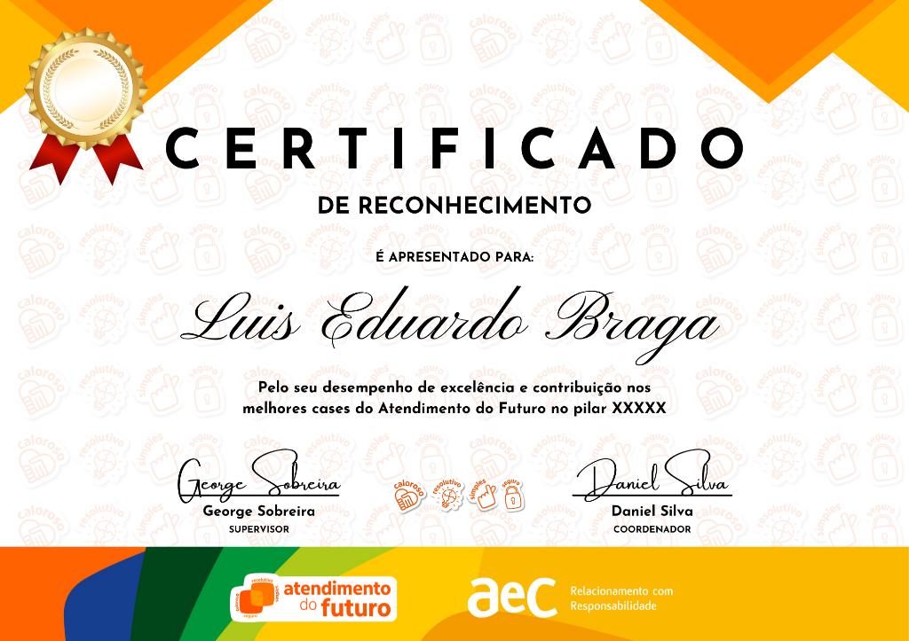
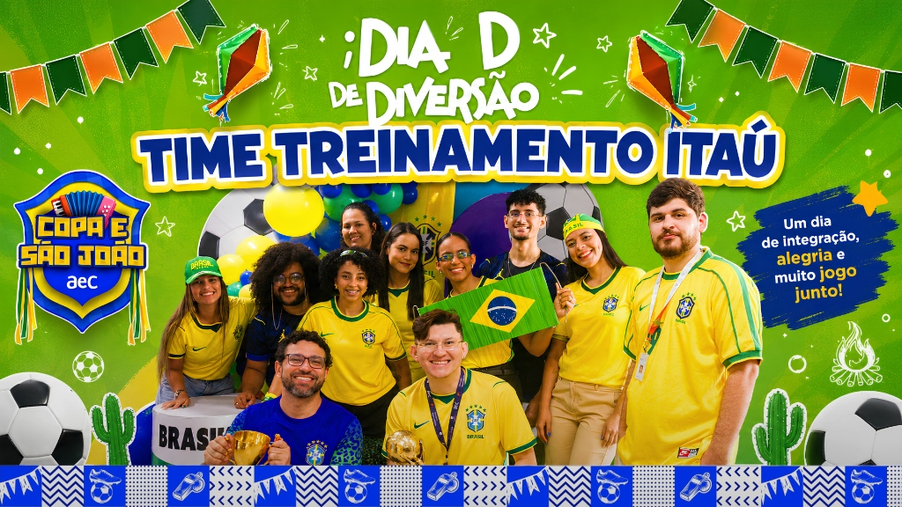
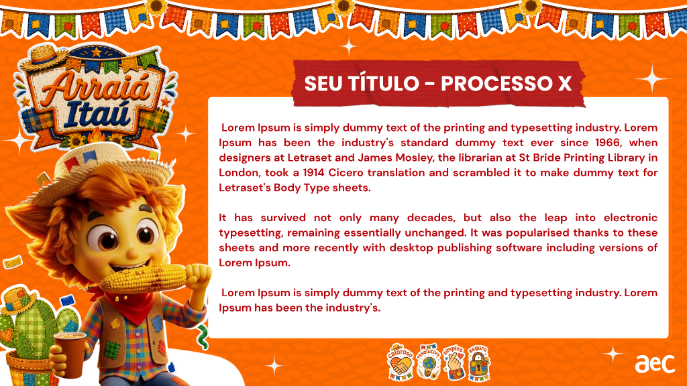
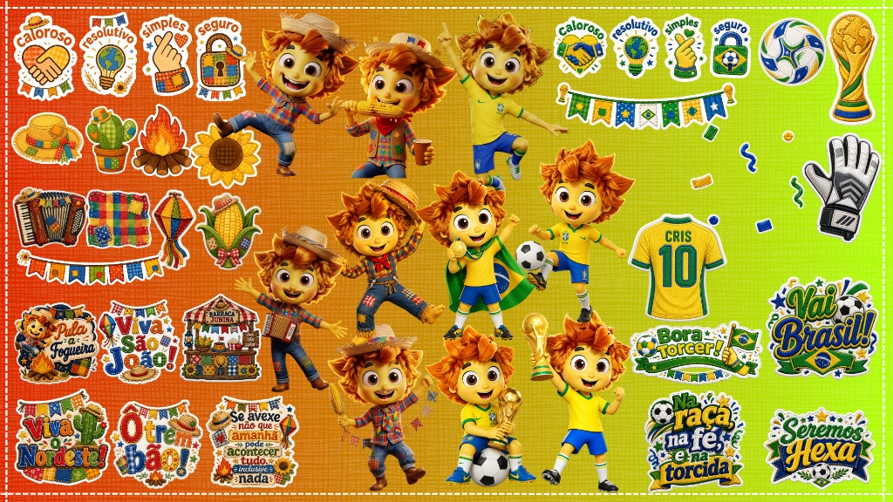
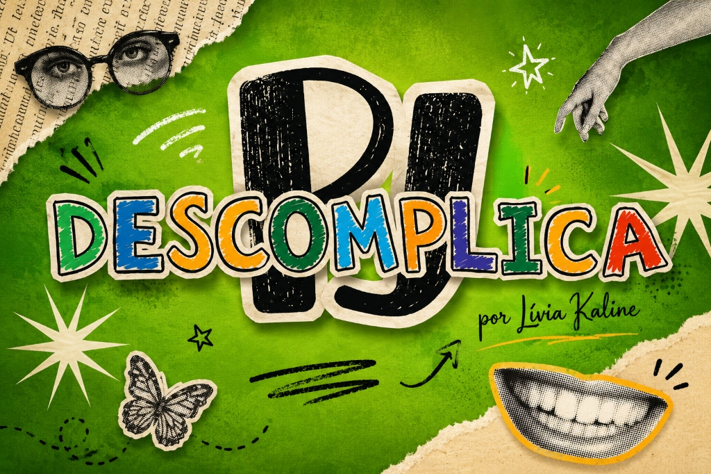
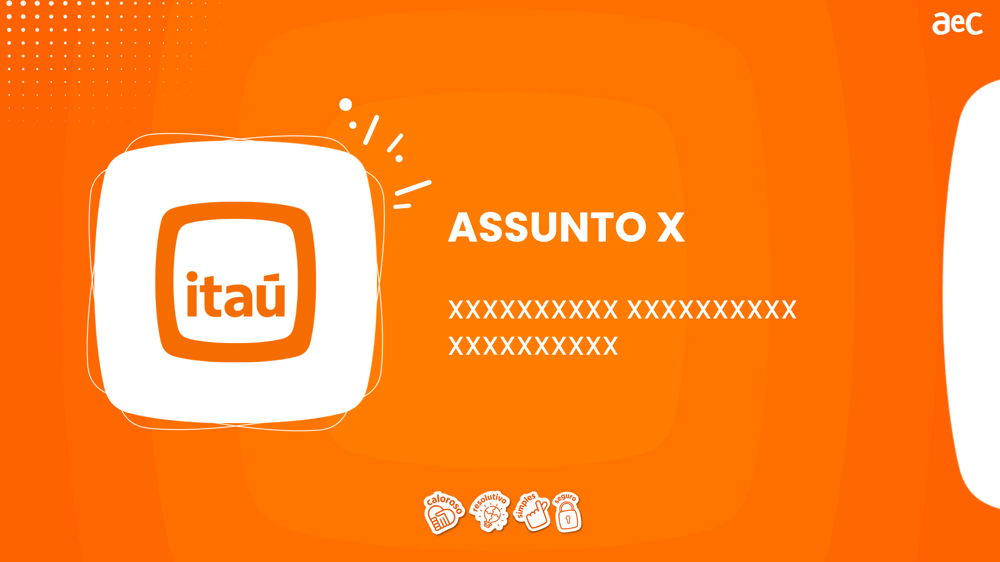
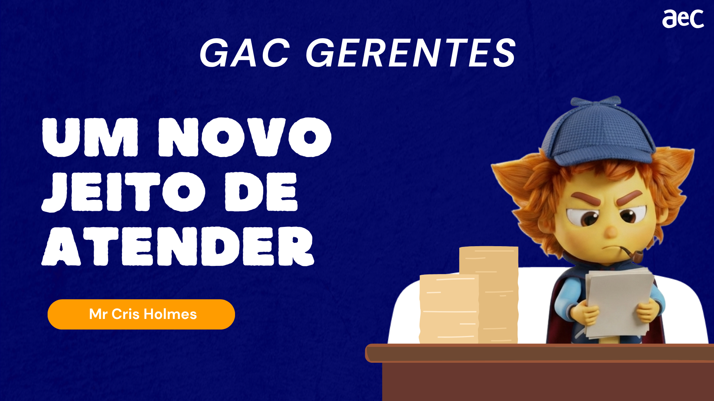
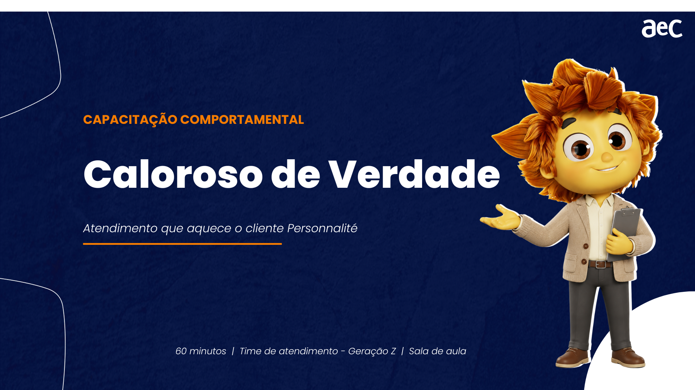
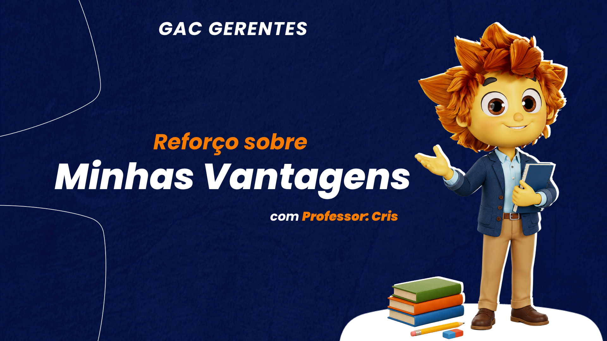
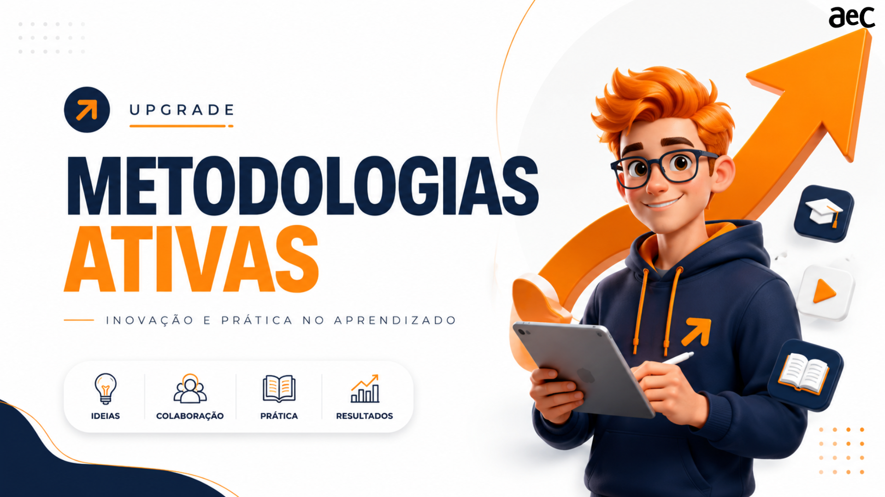
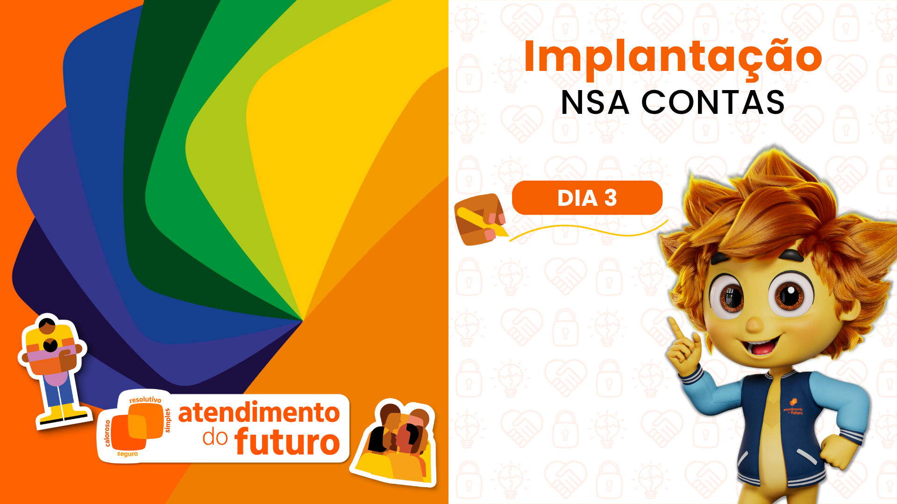
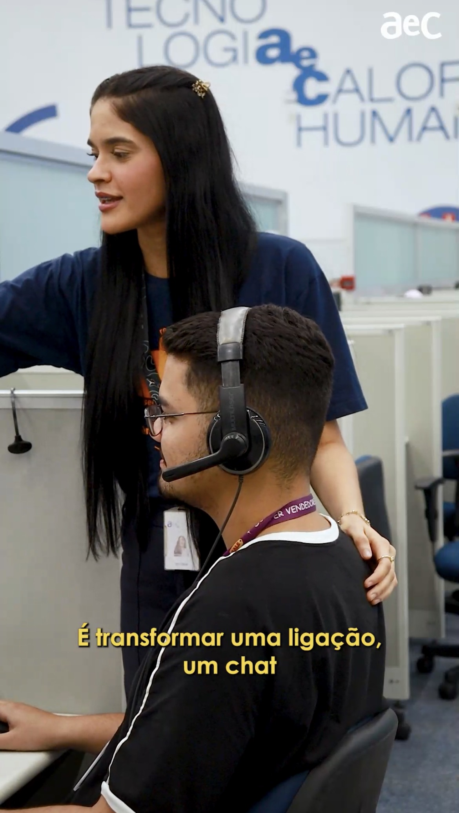
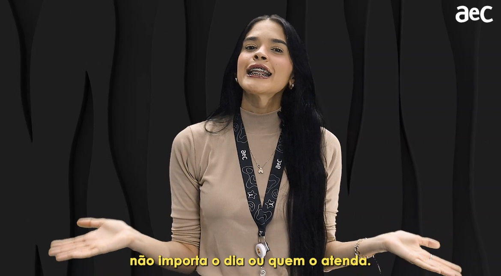
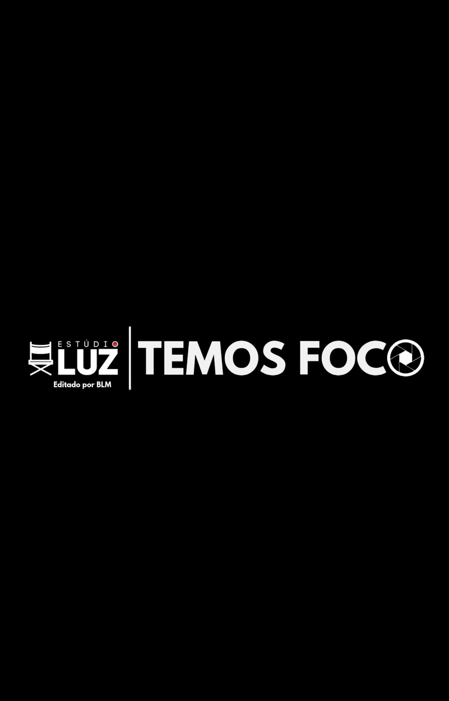